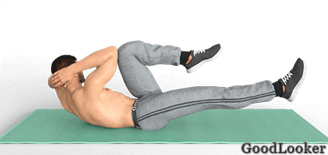
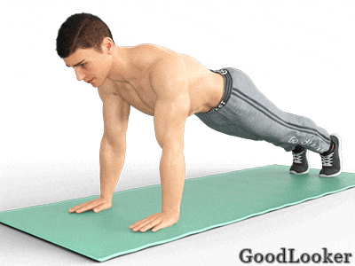

Тренировка для мужчин на кор полезна не только с точки зрения формирования плоского живота и накачанного пресса. Мускулатура кора принимает участие практически в каждом упражнении, которое бы вы не выполняли. Также работа над кором и брюшными мышцами благотворно сказывается на работе пищеварительных органов, позволяя стимулировать обменные процессы в организме. Кроме того, без крепкого мышечного корсета невозможно иметь здоровый позвоночник.
Рекомендуем выполнить последовательно все упражнения указанное количество повторений, затем повторить их еще раз по второму кругу.
1. Скручивания с касанием колен
В чем польза: Одно из базовых элементов в тренировке для мужчин на кор, направленное на общее укрепление мускулатуры пресса. Благодаря дополнительному движению руками работать становится чуть сложнее, что позволяет максимально нагрузить брюшную мускулатуру, сделать ее рельефнее и объемнее.
Как выполнять: В положении лежа с подогнутыми ногами распрямите руки вверх. В то время, когда выполняется скручивание, вам необходимо провести верхние конечности через стороны и в пиковой точке дотронуться до колен. По обратной амплитуде осуществите движение в стартовую фазу.
Сколько выполнять: 10-12 повторений.
2. Подъемы прямых ног
В чем польза: Подъемы прямых ног является отличным упражнением для проработки нижней части брюшной мускулатуры. В отличие от подъемов обеих ног, такой вариант снижает нагрузку на поясничный отдел, поэтому поможет подойти к тренировкам кора осмысленно и постепенно.
Как выполнять: Техника проста. Работа ведется из положения лежа на коврике. Руки по швам, ноги подняты под прямым углом к корпусу. После этого начинайте неспешно опускать и возвращать обратно сначала одну ногу, а потом и другую ногу. Для упрощения можно подложить руки под ягодицы.
Сколько выполнять: по 10-12 повторений на каждую ногу.
3. Велосипед
В чем польза: Представленный элемент программы для мужчин в домашних условиях нацелен на акцентированную нагрузку косых мышц. Данная группа имеет огромное значение для формирования красивого подтянутого пресса без жировых складок на боках, поэтому ей стоит уделить особенное внимание.
Как выполнять: Опять же работа ведется из положения лежа. Сложите руки за головой с развернутыми в разные стороны локтями. Теперь одновременно совершайте подъем левого колена и тянитесь к нему правым локтем, поднимая и скручивая корпус. Подобные движения совершаются на каждый подход разноименными конечностями.
Сколько выполнять: по 10-12 повторений на каждую сторону.

4. Пловец
В чем польза: Это многофункциональное упражнение, которое одновременно задействует как мускулатуру кора, так и мышцы спины, дельты. Основная нагрузка приходится на верхнюю часть пресса и поясничный отдел. За счет дополнительной работы руками нагружается задний пучок дельтоидов.
Как выполнять: Лягте на живот и максимально распрямите тело. Ваша задача — одновременно поднимать разноименные конечности с небольшими задержками в пиковых точках. Старайтесь поднимать руки и ноги как можно выше, чтобы увеличить нагрузку на мышцы.
Сколько выполнять: по 10-12 повторений на каждую сторону.

5. Подъемы в планке вверх-вниз
В чем польза: Еще одно многофункциональное упражнение, нагружающее абсолютно все тело. Здесь задействованы и мышцы кора, и руки, и спина, и стабилизаторы. Благодаря элементу вы развиваете как физическую силу, так и свою выносливость.
Как выполнять: Упражнение планка известно всем. Примите соответствующую позицию на локтях, после чего начинайте переходит в упор лежа и обратно. Тело при этом находится в постоянном напряжении. Не расслабляйте колени, не раскачивайте корпус и смотрите строго перед собой. Не забудьте выполнить подъемы сначала с правой руки, потом с левой руки (либо чередуйте стороны).
Сколько выполнять: 10-12 повторений сначала на одну сторону, потом 10-12 повторений на другую сторону.

6. Мостик на одной ноге
В чем польза: Элемент сочетает в себе сразу несколько функций. Во-первых, он отлично прорабатывает мускулатуру пресса и спины. Во-вторых, упражнение оптимально подходит для развития ягодичной мускулатуры и задней бедренной части.
Как выполнять: Для начала необходимо лечь на спину, подогнуть ноги и вытянуть одну вперед. Далее, опираясь на руки и стоящую на полу ногу, вам необходимо поднять таз до той поры, пока туловище не встанет в одну линию с бедром. В верхней точке задержитесь на секунду, напрягая пресс и ягодицы.
Сколько выполнять: 10-12 повторений сначала на одну сторону, потом 10-12 повторений на другую сторону.
7. Супермен в планке на руках
В чем польза: Это усложненная вариация планки на кор, которая дает дополнительный акцент на мышцы рук и ног. Поскольку в ходе работы вам придется держать равновесие всего на двух точках опоры, дополнительно развиваются мышцы-стабилизаторы.
Как выполнять: Находясь в классическом упоре лежа, вашей задачей является одновременное выпрямление разноименных конечностей. Поднимайте руку и ногу так, чтобы они стали в уровень корпуса, образуя тем самым ровную сплошную линию. В процессе работы смотрите строго перед собой.
Сколько выполнять: по 10-12 повторений на каждую сторону.
8. Сит-ап
В чем польза: Это одно из самых популярных упражнений для развития мускулатуры кора. Его используют как новички, так и профессиональные атлеты. В ходе занятия изолированно нагружается пресс, благодаря чему вы сможете развить его силовые качества, а также объем и рельеф.
Как выполнять: Элемент выполняется лежа спиной на коврике. Согните ноги, поставив их на стопы, а руки скрестите на груди. После этого начинайте выполнять подъемы корпуса до вертикального положения. Не делайте резких движений, поднимайтесь и опускайтесь плавно, чтобы не повредить спину.
Сколько выполнять: 10-12 повторений.
9. Повороты корпуса с касанием пола
В чем польза: Упражнение отлично прокачивает боковые стороны корпуса, которые зачастую остаются без должного внимания и являются проблемными. Это своеобразная вариация классических скручиваний, которая не только повысит эффективность нашей мужской программы упражнений, но и разнообразит тренировочный процесс.
Как выполнять: Начните с сидячего положения. Ноги слегка подогните, а руки сведите перед собой с развернутыми локтями. Теперь начинайте отклоняться назад, одновременно поворачивая корпус. Как только локоть коснется пола — возвращайтесь обратно. И так на каждую сторону по очереди.
Сколько выполнять: по 10-12 повторений на каждую сторону.
10. Колено-локоть в планке
В чем польза: Еще одно многофункциональное упражнение, акцентирующее нагрузку в боковых частях пресса. С его помощью вы сможете без труда проработать косые мышцы, выровнять осанку, укрепить статическую силу мускулатуры спины и рук. Проще говоря, это незаменимый элемент для укрепления всего тела.
Как выполнять: Примите положение планки на локтях, руки можно соединить в замок. После чего начните поочередно поднимать колени, стараясь дотягиваться ими до локтей. Работайте в среднем темпе без резких рывков чтобы не провоцировать раскачивание туловища и инерционных движений.
Сколько выполнять: по 10-12 повторений на каждую сторону.

11. "Охотничья собака"
В чем польза: Данное упражнение имеет некоторые сходства с вытягиванием конечностей из планки, но представленная вариация гораздо проще в техническом плане. Здесь акцент нагрузки приходится на брюшную мускулатуру и на поясницу. Дополнительно развивается задняя поверхность бедра, задний пучок дельт.
Как выполнять: Встав на четвереньки, начните медленно вытягивать разноименные конечности вдоль туловища. В пиковых точках делайте маленькие паузы, чтобы прочувствовать работу мышц. Старайтесь избегать перекосов корпуса, ровнее удерживая баланс.
Сколько выполнять: 10-12 повторений сначала на одну сторону, потом 10-12 повторений на другую сторону.
12. Подъем таза в боковой планке
В чем польза: Данный элемент предназначен для развития боковых мышц кора. Элемент первое время может казаться сложным, однако он является одним из наиболее эффективных для проработки внешних сторон корпуса.
Как выполнять: Приняв позу боковой планки, поставьте свободную руку на пояс. После этого опустите бедра к полу и вновь поднимите их, ненадолго задерживаясь в пиковой фазе. По такой системе выполняйте нужное число повторов на каждую сторону. Не заваливайте корпус вперед, при подъеме тянитесь тазом вверх.
Сколько выполнять: 10-12 повторений сначала на одну сторону, потом 10-12 повторений на другую сторону.

Продвинутые занимающиеся могут повторить упражнения в два круга.